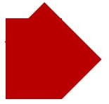
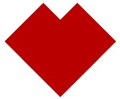

ترسیم قلب با استفاده از CSS در دید اول کار پیچیده ای به نظر میرسد. اما با اندکی خلاقیت مشاهده می کنیم که این کار در حقیقت بسیار ساده است.
برای ترسیم قلب در این مطلب، فقط از یک تگ div استفاده خواهیم کرد و قلب را کاملا با CSS 3 درست می کنیم.
در تصویر روبرو نتیجه ی کار را مشاهده می کنید که یک قلب کامل و سالم است!
برخی از اصول کار ما با تکنیکی که در مطلب قبلی در خصوص ترسیم علامت بینهایت شرح دادم مشترک است. لذا مطالب تکراری را مجددا بیان نمی کنم.
گام اول: کد HTML پایه
فایل heart.html را با محتویات زیر ایجاد کنید. داخل تگ style کد های CSS را خواهید نوشت.
<!doctype html> <html> <head> <title>Heart of CSS!</title> <meta charset="utf8" /> <style type="text/css"></style> </head> <body> <div id=“heart”></div> </body> </html>
گام دوم: موقعیت دهی
در این جا نیز مانند دفعه ی پیش، یک عنصر با موقعیت دهی relative و عناصر فرزند با موقعیت دهی absolute را داریم. این یک روش امن برای موقعیت دهی دقیق می باشد به گونه ای که به سایر محتویات صفحه آسیب وارد نکند.
#heart {
position: relative;
}
#heart:before, #heart:after {
position: absolute;
content: "";
top: 0;
width: 70px;
height: 115px;
background: #B90000;
}
در کد فوق، طول و عرض را مشخص کردم و رنگ زمینه ی قرمز رنگ تنظیم کردیم. تا این جا شکل به این صورت در می آید.
اگر دقت کرده باشید، تصویر فوق دو تا مستطیل روی هم است. زیرا ما همزمان به :after و :before استایل دادیم. اکنون برای این که بهتر متوجه دو تا بودن بلاک ها شوید، مقدار خاصیت left را جداگانه تنظیم می کنیم که دیگر دو تا بلاک روی هم قرار نگیرند.
#heart:before {
left: 70px;
}
#heart:after {
left: 0;
}
دقت کنید که عدد 70 معادل عرض بلاک است. زیرا می خواهیم دو بلاک دقیقا کنار هم side by side قرار بگیرند.
تصویر به صورت زیر تغییر پیدا می کند. می بینید که دو تا بلاک کنار هم قرار گرفتند و تقریبا یک مربع را تشکیل دادند.
گام سوم: چرخش بلاک ها
اکنون بلاک سمت چپ را به صورت ساعتگرد و بلاک سمت راست را به صورت پادساعتگرد به اندازه ی 45 درجه می چرخانیم.
#heart:before {
transform: rotate(-45deg);
transform-origin: 0 100%;
}
#heart:after {
transform: rotate(45deg);
transform-origin :100% 100%;
}
نکته: علاوه بر دستور transform از دستور transform-origin نیز استفاده می کنیم زیرا مرکز چرخش در مکان های متفاوتی است. می توانید با تغییر مقدار ها، اثر آن را مشاهده کنید.
تصاویر زیر مراحل چرخش بلاک ها را نشان می دهد.
 
در تصویر سمت راست مشاهده می کنید که بلاک سمت راست را 45 درجه پادساعتگرد چرخانده ایم و در تصویر سمت چپ می بینید که بلاک دیگر را هم چرخاندیم و الان تصویر به قبل نزدیک تر شد! فقط یک مرحله باقی مانده تا قلب CSS شروع به تپیدن کند!
گام چهارم: زاویه ی حاشیه (border-radius)
با دادن زاویه به border ها، گوشه ی شکل را گرد می کنیم تا کاملا شبیه قلب شود.
#heart:before, #heart:after {
border-radius: 50px 50px 0 0;
}
نتیجه ی نهایی را در ابتدای مقاله مشاهده می کنید.
این هم کد کامل CSS این مثال:
#heart {
position: relative;
}
#heart:before, #heart:after {
position: absolute;
content: "";
top: 0;
width: 70px;
height: 115px;
background: #B90000;
}
#heart:before {
left: 70px;
}
#heart:after {
left: 0;
}
#heart:before {
transform: rotate(-45deg);
-webkit-transform: rotate(-45deg);
-ms-transform: rotate(-45deg);
-moz-transform: rotate(-45deg);
-o-transform: rotate(-45deg);
transform-origin: 0 100%;
-webkit-transform-origin: 0 100%;
-ms-transform-origin: 0 100%;
-moz-transform-origin: 0 100%;
-o-transform-origin: 0 100%;
}
#heart:after {
transform: rotate(45deg);
-webkit-transform: rotate(45deg);
-ms-transform: rotate(45deg);
-moz-transform: rotate(45deg);
-o-transform: rotate(45deg);
transform-origin :100% 100%;
-moz-transform-origin :100% 100%;
-webkit-transform-origin :100% 100%;
-o-transform-origin :100% 100%;
-ms-transform-origin :100% 100%;
}
#heart:before, #heart:after {
border-radius: 50px 50px 0 0;
-moz-border-radius: 50px 50px 0 0;
}
موفق باشید.